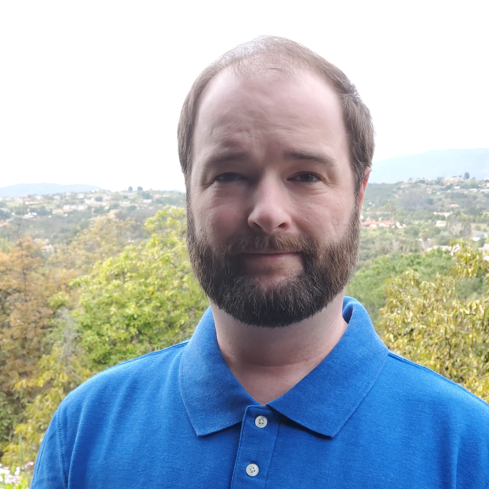

About Me
My name is Ryan Harris and I'm a professional software developer. I graduated from UCLA with a Bachelors in Computer Science and also have a certificate from UCSD in full stack development. During my time at UCLA, I trained primarily in C++ before accepting a Java developer role at Teradata. I worked as a Java developer for Teradata between 2012 and 2017. In 2017 I left the software development field to pursue other interests, but ultimately decided to return back to programming in 2020.
While at Teradata I worked on a product called Teradata Studio, which was a desktop application for database administration, SQL query development, data transfers, and management tasks for Teradata, Aster, and Hadoop databases. I developed a wide variety of features, including an enhanced SQL editor, a data transfer feature, file input and output for loading/exporting tables, wizards to assist users to create/modify database schemas, users, and other objects, and Hadoop connectivity. In addition to writing Java, I also managed the team's automated build and testing environments using Teamcity and Git. I led the effort to migrate our code base from Subversion to Git while preserving all the Subversion commit history. I also setup and managed Hadoop clusters for development and testing purposes.